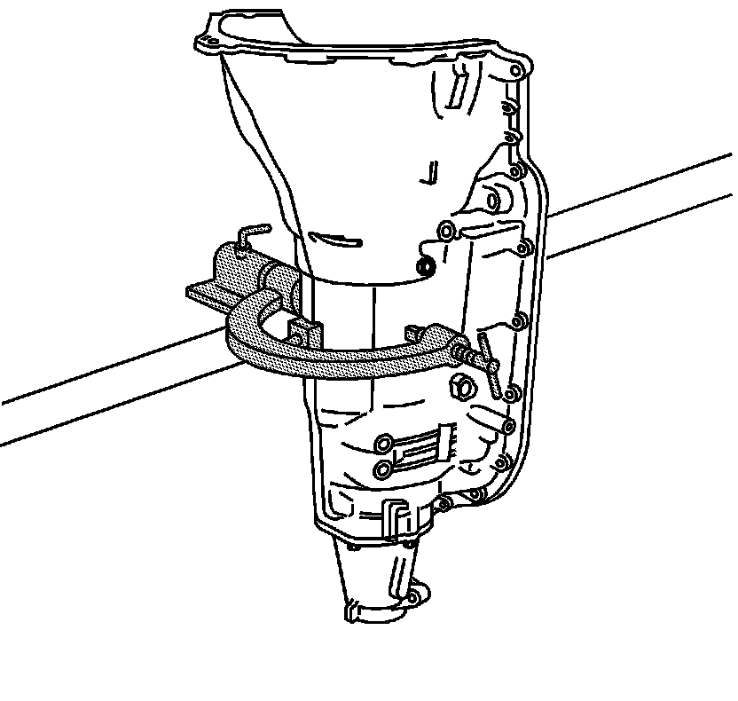
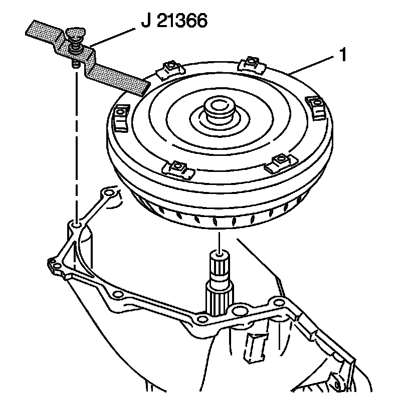

Torque Converter Assembly Installation
Torque Converter Assembly Installation
Tools Required
J 21366 Converter Holding Strap

1. Rotate the transmission so the converter housing is facing up.

2. Install the torque converter assembly (1). Rotate the torque converter assembly (1) in order to engage the turbine shaft, the stator shaft, and the lugs onto the oil pump drive gear.
3. Install the J 21366 in order to hold the torque converter assembly (1) in place while moving the transmission assembly. Remove the J 21366 prior to installing the transmission into the vehicle.